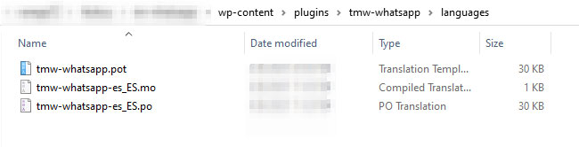

Master Whatsapp Chat
Installation
1) Download the plugin from your ThemeForest downloads section.
2) Open the .zip package downloaded and upload tmw-whatsapp.zip in your WP insllatin: Go to WP Admin > Plugins > Add New > Upload Plugin.

Configuration
General
The image below is self explanatory. The "General tab" is where you control the "Floating Wiget" behavior and content. For example:
- Enable the RTL Layout
- Position of floating widget with the option to move the button some pixels. This is useful when we want remove the button from behind a "Scroll to Top" button or "Recaptcha V3" badge.
- Content of the head of chat window like title, description, phone and email.
- Default message for when you still not have any attendant registered.
- Content for footer of the chat window. Show footer is optional and comes disabled by default.
- Change the chat window backgroud with an image.
- Show call to action text at the left side of floating chat button.
- Select how the Whatsapp Web should open (click icon, select attendant or when click chat send button)
- Automatically open the chat on the first load of the page after few seconds.
- Hide the floating widget button/chat from specific pages.
- Show the floating widget button/chat ONLY at specific pages.
Attendants - Register new attendants
The "Attendants tab" is where you register the attendants/agents. You can have multiple attendants/agents.
1) Click "Add New" to register a new agent:
1) Fill the new attendant fields. The image below is self explanatory. Here's where you control the attendant/agent infos, availability, etc...
- Set Name
- Set Description. Eg: Support Tech (attendant role or anything you want)
- Set the phone (without "+" before the number)
- Set start message. Controls the message that's displayed for the website user when select the attendant in the chat list.
- Set default Timezone.
- Default offline and interval attendant badge messages. Will appear a colored badge over the attendant.
- Set Attendant image.
- Setup the availability of the attendant. Controls the week days and hours that the attendant works. You have the possibility to set a interval (example: lunch time)

Here's the attendant Setup Availability config (when you click in a day):
Skin
The image below is self explanatory. The "Skin" tab is where you control the floating widget/chat colors and font family.
- Set Name
- Change the font family (Google Fonts). Hover the "How to Change" link to see a popup explaining how to get the correct value. The default font family is Poppins.
- Change the font family name. Once you have changed the "Font Family" field, you also need set the correct new font family name. Hover the "How to change" link to see a popup explaining.
- Change the colors of the floating button, chat window, attendants list, attendant chat view.
Performance
The image below is self explanatory. The "Performance" tab is where you have some settings to reduce the javascript execution cost on the first load of the page, this can help on ratings for Google Page Speed for example.
-
Set "How TM Whatsapp Plugin should be initialized?": Controls how the plugin will be initialized on first load of the page. Possible options are:
- On Load of the Page
- On first scroll of the page
- On first movement mouse on the page
- After few seconds (you can define the time)
Reset
The image below is self explanatory. The "Reset" tab is where you can reset all plugin settings to default.
WooCommerce Button
The whatsapp chat button for WooCommerce single products/posts is located at WP Admin > Products > Create or Edit a product. In the product editing admin page, locate the "TM Whatsapp Button" box at top bottom corner.
Elementor Widget
Once you are editing a page with Elementor, search for "TM Whatsapp Button" like in the first image below.
The elementor widget is very customizable and comes with a lot of options:
- Select the attendant (previous registered in the TM Whatsapp plugin Settings)
- Change layout
- Change button titile
- Change button description
- Select alignment
- Change button colors trough the "Skin" section
WPBakery Component
Once you are editing a page with WPBakery Page Builder, search for the tab "TM Whatsapp" and locate the component "TM Whatsapp Button":
The WPBakery component is very customizable and comes with a lot of options:
- Select the attendant (previous registered in the TM Whatsapp plugin Settings)
- Change layout
- Change button titile
- Change button description
- Select alignment
- Change button colors trough the "Skin" section
WP Shortcode
That's the default WP Shortcode of whatsapp chat button. The markup is:
[tmw_whatsapp_button_wp attendant="1" photo_or_icon="photo" alignment="center"]
Explaining: attendant="1" is the attendant ID registered in the plugin settings.
Explaining: photo_or_icon="photo" will show the attendant image instead of whatsapp icon.
Explaining: alignment="center" will aling the button to center.
Here's all possible options/attributes:
"attendant" (value: Attendant ID Number) "title" (changes the button attendant name to a custom title) "description" (changes the attendant default description to a custom description) "photo_or_icon" (values: "icon" or "photo") "alignment" (values: "left", "center" or "right") "background_color" (value: hex color. Eg: #000) "background_hover_color" (value: hex color. Eg: #000) "icon_color" (value: hex color. Eg: #000) "icon_hover_color" (value: hex color. Eg: #000) "attendant_name_color" (value: hex color. Eg: #000) "attendant_name_hover_color" (value: hex color. Eg: #000) "attendant_description_color" (value: hex color. Eg: #000) "attendant_description_hover_color" (value: hex color. Eg: #000) "status_background_color" (value: hex color. Eg: #000) "status_background_hover_color" (value: hex color. Eg: #000) "status_text_color" (value: hex color. Eg: #000) "badge_offline_message_background" (value: hex color. Eg: #000) "badge_offline_message_text" (value: hex color. Eg: #000) "badge_interval_background" (value: hex color. Eg: #000) "badge_interval_text" (value: hex color. Eg: #000)
Translation/Multi Language
WPML
The plugin is fully compatible with WPML. You can have attendants with differents names, numbers, descriptions for each language.
1) First install the WPML plugin and also make sure the WPML String Translation plugins is installed and active.
2) Go to WP Admin > WPML > Strings Translation
3) Select the domain "TM Whatsapp" like in the image below to show only the translatable plugin texts/strings
Polylang
The plugin is fully compatible with Polylang. You can have attendants with differents names, numbers, descriptions for each language.
1) First install the Polylang plugin.
2) Go to WP Admin > Languages > Strings Translations
3) In the "View all Groups" dropdown, filter for "TM Whatsapp".
POEDIT (.pot)
You can translate all plugin texts/strings with the .pot language file inside the plugin folder /languages/tmw-whatsapp.pot. Probably the best way to do that is with the software POEDIT. You can download here: https://poedit.net/. There's another softwares trough the web that can do the same job, but probably the POEDIT is the best option and we recommend.
1) First download and install the the POEDIT software.
2) Run the software and click to "Create a new Translation":
3) Locate the "tmw-whatsapp.pot" file inside the plugin folder "/languages":
4) Select the language for your translation. In this exmaple we choice "Spanish" (es_ES).
5) Translate all the strings. For example:
6) Click on the button "Save" and save in the same "/languages" folder. The POEDIT software will propose a filename name with the country code, change the filename to tmw-whatsapp-es_ES (replace "es_ES" with the country code you are creating the translation). Just proceed and click to save. Two files will be created (.po) and (.mo)
7) Go to WP Admin > Settings > General and change the "Site Language" to the translation language you created. In this examples we used es_ES (Espanõl).